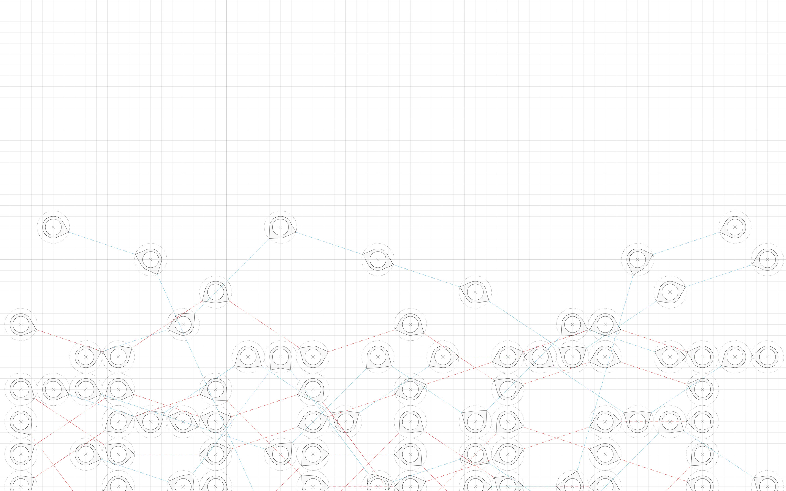
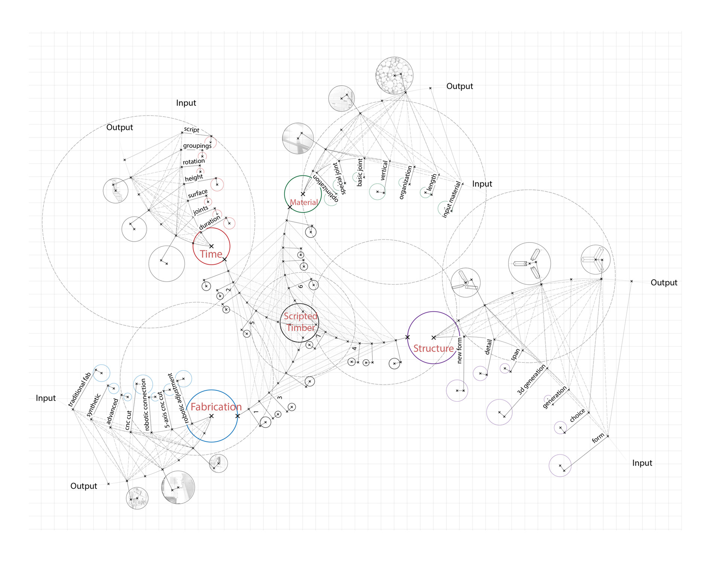

Bottom-up Platform for Connecting Digital Fabrication with Everybody
Project Type: Digital fabrication, system design
Roles: Designer
Team: Shu Zhou
Timeline: Summer 2015
Digital fabrication has been widely used in many fields, yet it is too complicated for the public to understand or use. The purpose of this project is to help create an usable system by which people can design their own living spaces.
Meanwhile, the system will calculate the exact shape of all construction components which can be easily machined. As a result, autonomous fabrication can be achieved by everyone through the bottom-up interactive platform.
Workflow of the platform construction process
China is undergoing fast urbanization, more and more people are swarming into the city, making price of housing unaffordable for ordinary residents. People are thus trapped in old apartments and use all kinds of methods to enlarge their living spaces by adding new structure on existing building.
Occupied public corridors
@ Longchang Flats, Shanghai
Self-built units
@Kowloon City, Hongkong
Crowded buildings
@City Village, Shenzhen
There are four digital inputs in the digital platform - time, material, fabrication, and structure. Users can put desired level of input and the best outcome will be chosen and optimized through the process, which corporates the empirical hand-craft with digital fabrication.
These circles stand for columns in a grid system. People only need to pick a series of circles and the platform will automatically generate the structure solutions.
People may set heights for columns or width of beams, and they can also make timber frames as structure for floors or walls or twisted 3D.
People may make different designs and all of them can be presented together. So it is helpful for this decision making process.
Through digital fabrication methods and digital assembly, various timber joint and combinations can be fabricated and installed easily.